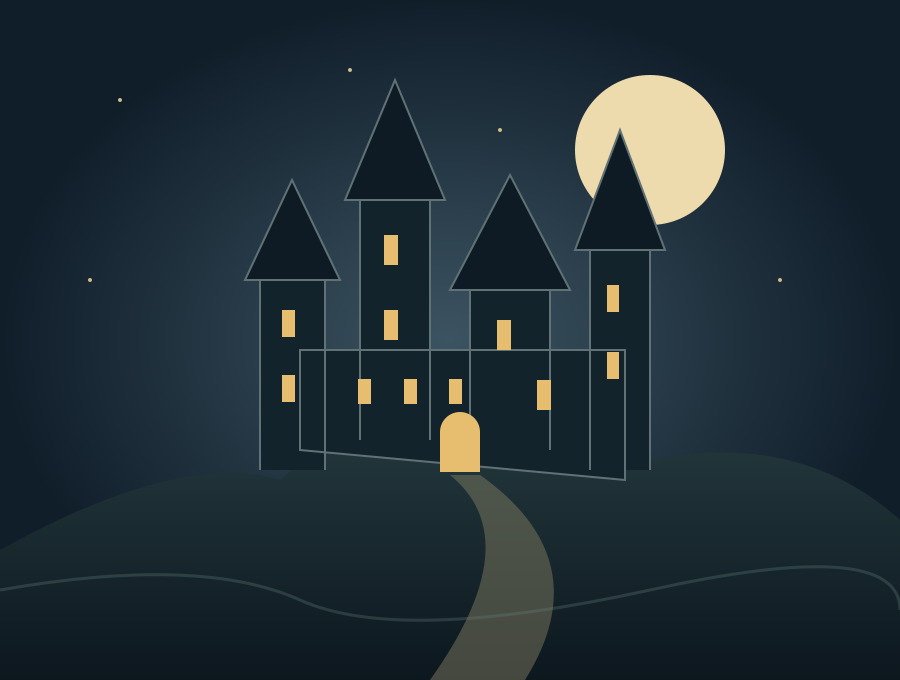
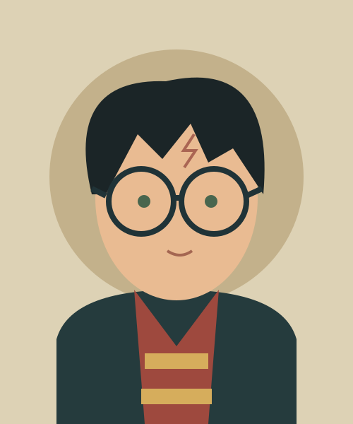
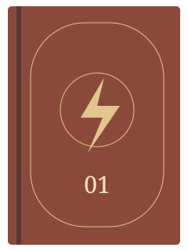
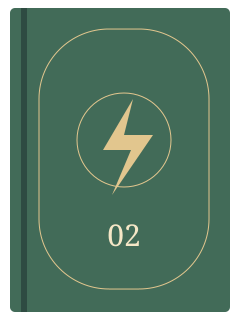
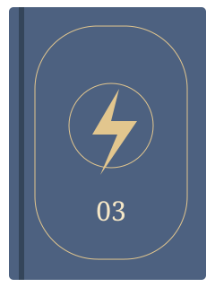
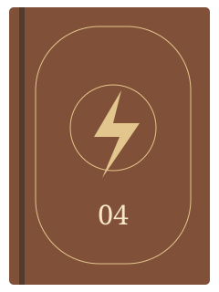
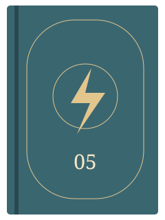
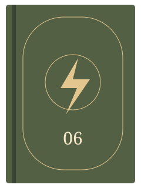
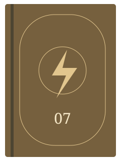

A DESCOBERTA
Uma carta muda tudo
Hagrid apresenta a Harry sua origem mágica. Hogwarts abre as portas para um mundo que ele ainda não conhecia.
UM PERSONAGEM. SETE LIVROS. UM UNIVERSO.
Conheça Harry Potter: o menino que encontrou em Hogwarts uma nova história para chamar de sua.
Descobrir a história

01 / BIOGRAFIA DO PERSONAGEM
Harry Potter nasceu em 31 de julho de 1980, filho de Tiago e Lílian Potter. Depois de perder os pais, cresceu com os tios Dursley, longe do mundo mágico.
Aos onze anos, descobriu que era bruxo e ingressou em Hogwarts. Ao lado de Rony Weasley e Hermione Granger, encontrou amizade e enfrentou os perigos ligados a Lord Voldemort.
Sua trajetória acompanha o amadurecimento de alguém que aprende a lidar com perdas, responsabilidades e decisões difíceis.
02 / MOMENTOS DA HISTÓRIA
Atenção: esta seção contém spoilers da série.
A DESCOBERTA
Hagrid apresenta a Harry sua origem mágica. Hogwarts abre as portas para um mundo que ele ainda não conhecia.
O PERTENCIMENTO
A convivência com Rony e Hermione transforma a escola em um lugar de afeto, aprendizado e aventuras.
O CONFRONTO
Com o retorno de Voldemort, Harry precisa enfrentar o medo e compreender as conexões entre seu passado e o inimigo.
O LEGADO
Na etapa final, a busca pelas Horcruxes e a Batalha de Hogwarts encerram o conflito central da saga.
03 / BIBLIOGRAFIA DA SÉRIE
Obras de J. K. Rowling.
Anos da primeira publicação no Reino Unido.

VOLUME 01 · 1997
O primeiro encontro com o mundo mágico.

VOLUME 02 · 1998
Um mistério escondido dentro de Hogwarts.

VOLUME 03 · 1999
O passado revela novas conexões.

VOLUME 04 · 2000
Uma competição que muda o rumo da história.

VOLUME 05 · 2003
União e resistência em tempos de incerteza.

VOLUME 06 · 2005
Memórias que ajudam a entender o inimigo.

VOLUME 07 · 2007
A jornada final para enfrentar Voldemort.
As capas são ilustrações criadas para este projeto; não reproduzem edições comerciais.
04 / PARA CONTINUAR A LEITURA
Textos resumidos para fins educativos. Consulte as fontes para explorar a obra.